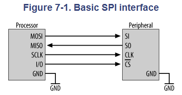
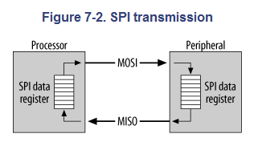
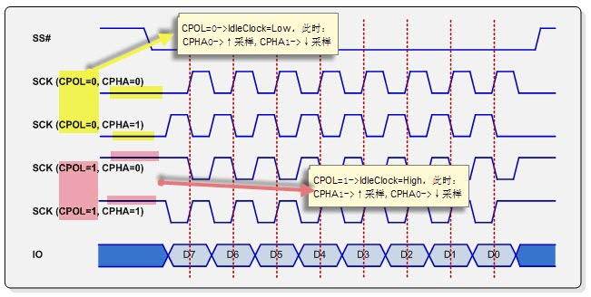
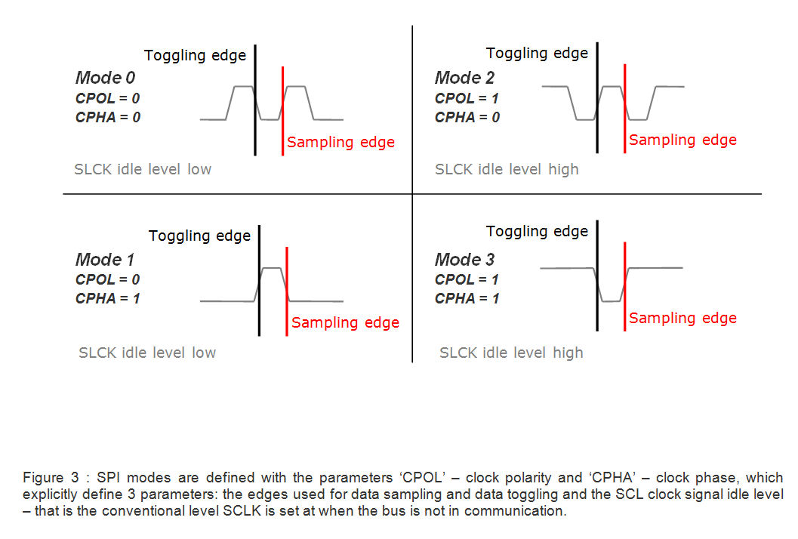
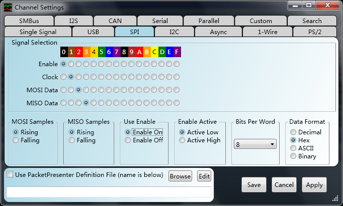
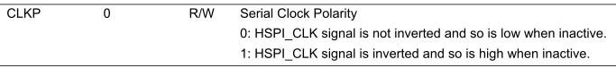
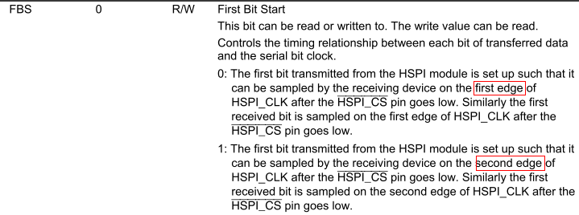
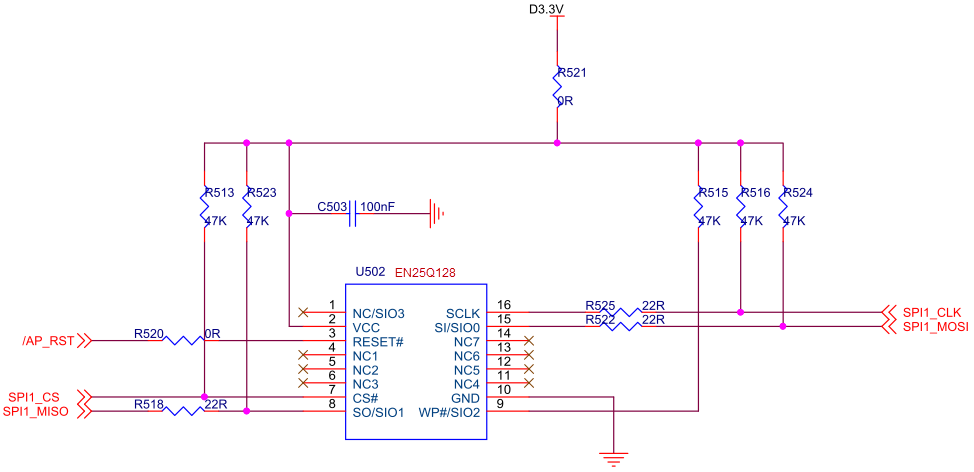
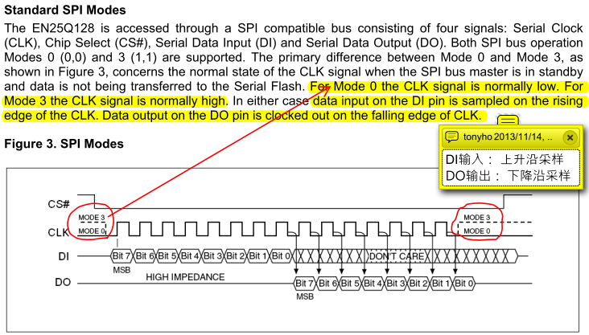
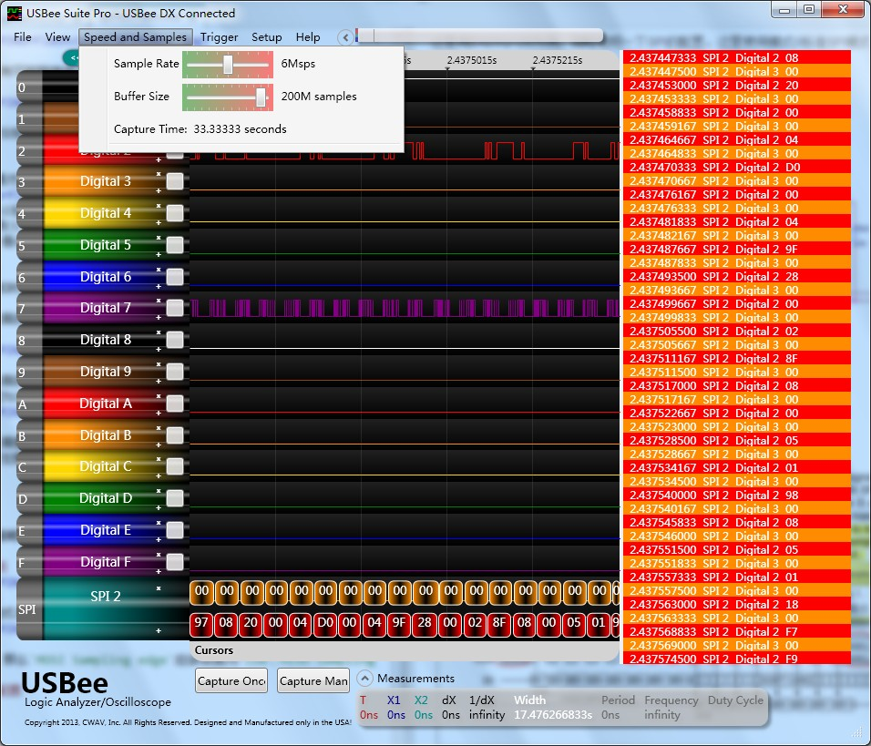

SPI协议
Slave与Master
一般而言，提供clock的一方称为master。如下图（7-1）中的SCLK方向可知：Processor为master，而Peripheral为slave。
SPI设备接口
SPI uses four main signals:
- Master Out Slave In (MOSI)
- Master In Slave Out (MISO)
- Serial CLocK (SCLK or SCK) and Chip Select (CS) for the peripheral.
- Some processors have a dedicated chip select for SPI interfacing called Slave Select (SS).

SPI传输
SPI使用移位寄存器方式传输，示意图：

形成一个循环圈，任何时刻对于一个SPI设备而言都有移位输入和移位输出。
如果想只读或者只写，那么在读的时候需要发送一个dummy byte从而产生时钟；在写的时候简单的忽略读到的数据就可以了。
SPI传输的四种方式
根据时钟极性和时钟相位的不同共有四种，时钟极性和相位分别指：
- 时钟极性(CPOL-Clock Polarity)：空闲时的极性高（
polarity high）或者低（polarity low）。 - 时钟相位(CPHA-CLock Phase)：在上升沿还是下降沿采样数据。
四种模式用图说明如下：

将四种模式的采样时刻（Sampling edge）和数据变化时刻（Toggling edge）截取出来：

在逻辑分析仪上面的配置有可能稍有些不一样:

上图是一个虚拟逻辑分析仪软件上的SPI配置截图，除了通道选择和字长度配置外，它还有其他四个设置：
- MOSI Samples:如果是方式0和3，那么这里是上升沿，方式1和2应该配置为下降沿。看前面的方式说明图。
- MISO Samples:SO和SI在同一种方式下采样边缘一般是一样的，因此同上。
- Use Enable:是否使用CS Pin脚。
- Enable Active:这个是CS有效时候的电平。
{kind=link}
示例：SPI寄存器配置
在某一个SoC上时钟极性和时钟相位的配置寄存器：
-
时钟极性配置（查看前面的4种模式图可以知道模式0和模式1应该是配置为0，另外两种配置为1）： 
-
时钟相位配置（查看前面的4种模式图可以知道模式1和模式3应该是配置为1【第二个edge】，另外两种配置为0）： 
-
一般除了方式设置外还需要对时钟速度配置，这个配置根据不同的SoC跟踪时钟如何分频过来就可以得出。并且需要注意不要超过Spi-Slave设备的最大速度。
SPI reset配置：
SPI Nor Flash
这里用EN25Q128为例，简略说明一下SPI的配置。这里使用模式0标准SPI模式（只用一根DO线）。
SPI-NorFlash的接线

EN25Q128的SPI方式
EN25Q128支持模式0和模式3。 
逻辑分析仪配置
假设使用的是SPI方式0，那么MOSI Sampling edge应该设置为Low，MISO Sampling edge设置为High。
SoC SPI控制寄存器配置
根据前面说过的配置好：
- SoC为Master
- CPHA
- CPOL
- Clock Speed(使用标准模式则需要小于80MHz【◆2】)
配置好后就可以使用逻辑分析仪来协助调试。
使用虚拟逻辑分析仪采集数据示意图
配置采样率和Buf size 
参考
【◆1】 SPI Tutorial 一个SPI教程。
【◆2】 EN25Q128 Datasheet SPI NorFlash。
【◆3】 SPI Setup and Hold Times 说明了为何MISO和MOSI分别在上升沿和下降沿采样。
Comments !